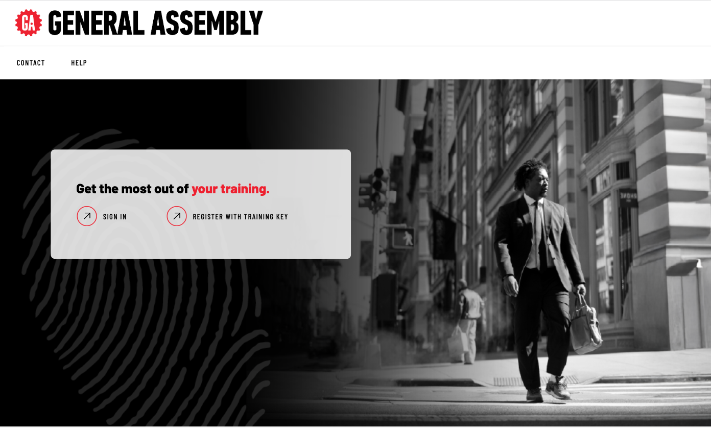
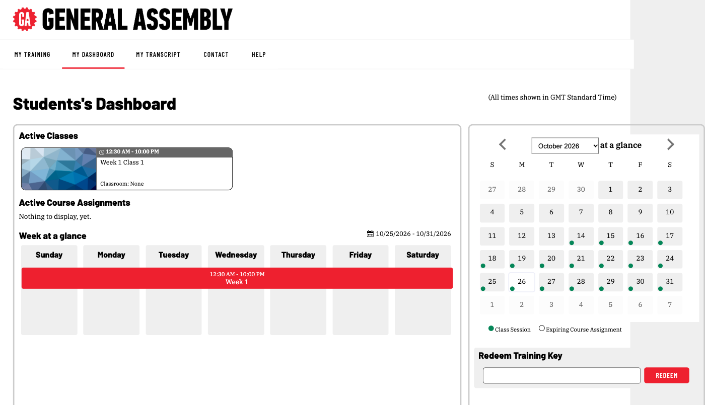
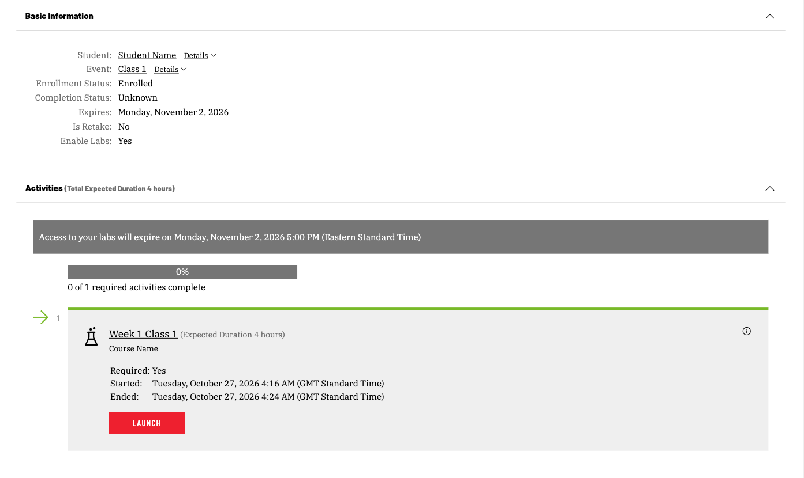

What you’ll be using
Your hands-on work happens in Skillable, a lab platform that gives you a ready-to-use computer in your web browser. Every tool you need is already installed. You don’t need to install anything on your own laptop.
You’ll use two things:
- Skillable TMS: the website where you sign in and find your class.
- The lab window: your virtual machine, plus step-by-step instructions alongside it.
Before your first session
Check your connection (5 minutes).
- Run Skillable’s connection test: .
- Allow pop-ups for the TMS site, . Labs open in a new window.
- If you’re on a corporate network or VPN and the test fails, let your program contact know before day one.
Sign in
- Go to .
- Select Sign In.
- Enter the email and temporary password GA sent you.
- Set a new password when prompted. You’ll be signed out; sign back in with your new password.
- You’ll land on your dashboard.

assets/screens/tms-sign-in.png
assets/screens/tms-student-dashboard.pngFind your class
- Open the Classes tab and select your class.
- Your labs are listed under Activities.
- Labs become available when your class starts.

assets/screens/tms-enrollment-activities.pngStart a lab
- Select Launch next to the lab your instructor names.
- The lab opens in a new window and takes a minute or two to start.
- Instructions are on one side, your machine is on the other.
Helpful features in the instructions:
- Click-to-type text: click it and it types into your machine for you.
- Click-to-copy text: click it to copy to your clipboard.
- Check boxes: tick them off as you go.
- Check buttons: test whether you completed a step correctly.
- Next / Previous: move between pages.

assets/screens/lab-window-full.pngThe most important habit: save your work to GitHub
Your lab machine is borrowed. Depending on your program, it may be erased when the lab ends. Your code is only safe once it’s on GitHub.
Start of session
git clone <your-repo-url> # on a fresh machine
git pull # on a machine you saved and reopened
Every time you finish a step, and before any break
git add .
git commit -m "what you changed"
git push
End of session
- Commit and push.
- Check your commit appears on GitHub in your browser.
- Then leave the lab (below).
Never commit passwords, keys or tokens.
Leaving a lab
Open the Exit menu at the top of the lab window.
| Option | What happens | Use it when |
|---|---|---|
| Save and Close | Your machine is kept so you can continue later | Your instructor has told you to save |
| End | The lab is finished and the machine is deleted | You’re done with the lab |
| Cancel | Your work on the machine is discarded | Only if you want to start over |

assets/screens/lab-exit-menu-save.pngIf you only see End, that lab can’t be saved. Make sure you’ve pushed to GitHub first.
What if…
| Situation | What happens | What to do |
|---|---|---|
| I closed the lab window | The lab keeps running for 60 minutes by default | Relaunch from your class page in TMS |
| I stepped away | After 15 minutes idle (by default) you’ll see a warning, then the lab shuts down | Respond to the warning, or push before you step away |
| My Wi-Fi dropped | Treated like stepping away | Reconnect quickly. Work since your last push may be at risk |
| The lab timer is running out | The lab ends when time is up | Extend when prompted, and push regularly |
| My screen went black or froze | Usually a connection issue | Use Reconnect in the machine menu, then refresh the page |
Getting help
- During a session: ask your instructor. They can see your lab and help you directly inside it.
- Outside a session: contact your program’s client success manager.
- Lab won’t load at all: check , then contact your program’s client success manager.
Does your program do anything differently?
Some programs keep one machine for several days, or have extra setup steps each session. If yours does, your program team will send those instructions separately.